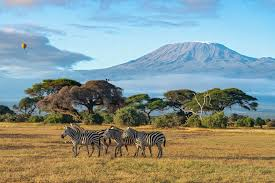
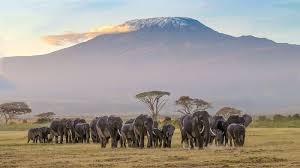
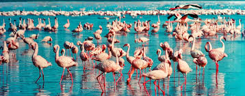
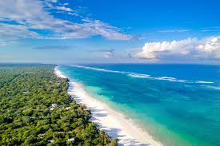
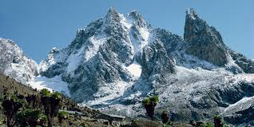

SafariMaasai Mara
Kenya's most celebrated reserve, famous for the annual wildebeest migration and year-round big-five sightings across open savannah plains.
View packages
SafariAmboseli
Set against the backdrop of Mount Kilimanjaro, Amboseli is renowned for its large elephant herds and sweeping views across the dry lake bed.
View packages
SafariLake Nakuru
A soda lake famous for its flamingo flocks, white and black rhinos, and a fenced sanctuary that protects some of Kenya's most endangered species.
View packages
CoastalDiani Beach
Powder-white sand, warm Indian Ocean water and a coral reef just offshore — Diani is the ideal wind-down after a safari circuit inland.
View packages Coastal
Coastal
Lamu
A UNESCO-listed island town where Swahili architecture, narrow donkey-paths and traditional dhow sailing have changed little in six centuries.
View packages
HighlandMount Kenya
Africa's second-highest peak offers everything from forest elephant walks at its base to technical ascents of Batian and Nelion for experienced climbers.
View packages